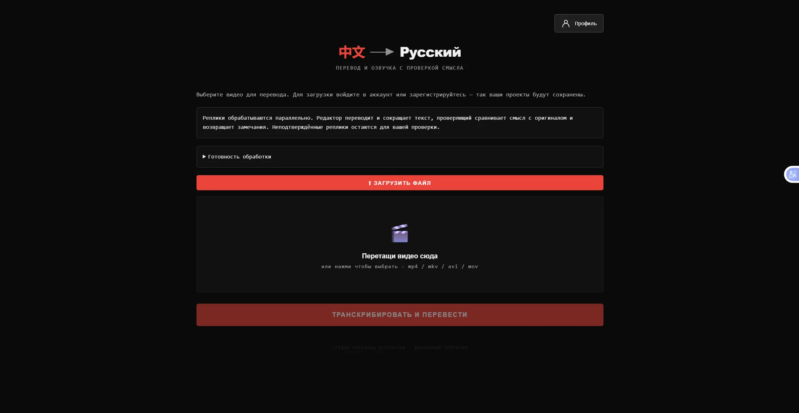
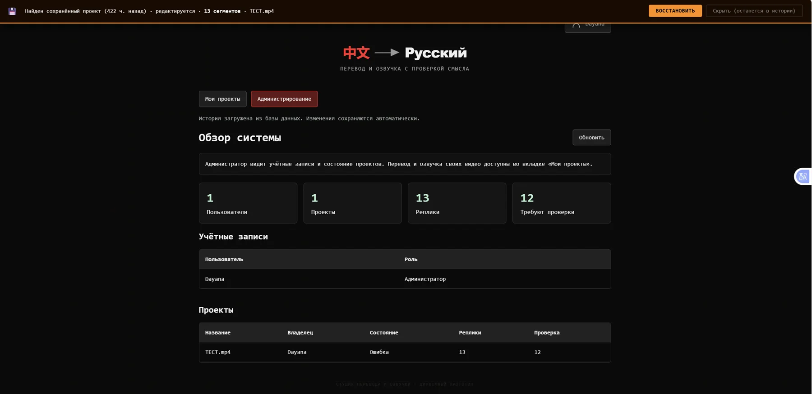

Студия дубляжа
Я разработала прототип студии дубляжа. После загрузки видео приложение разбивает речь на реплики, переводит их и отмечает фрагменты, где нужно сверить смысл с оригиналом. К сохранённому проекту можно вернуться и продолжить редактуру.

